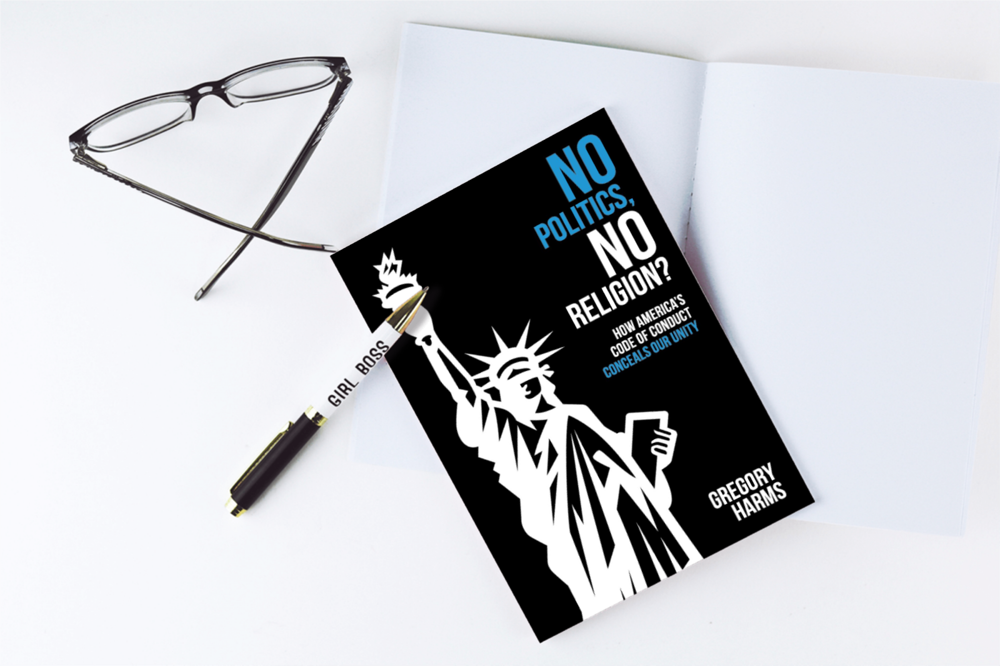

Hobbes Reconsidered
If you like reading about philosophy, here's a free, weekly newsletter with articles just like this one: Send it to me!

Thomas Hobbes (1588–1679) is on that list of thinkers and writers about whom many have a lot of opinions. The problem is, few seem to read these thinkers.
On that list I would place Karl Marx, Friedrich Nietzsche, Thomas Hobbes, and (the living) Noam Chomsky. It is as though there are two of each thinker: the one people talk about, and the one whose work is in print. At the top of the list, I would argue, is Karl Marx. It is rare, even when in the company of academics and intellectuals, to hear someone describe his work accurately. In addition to not reading these thinkers, there is commonly attached to each writer a go-to quote. Like Adam Smith’s “invisible hand” concept or his “truck, barter, and exchange” quote. One gets tired of seeing these quotes. They are overused, misused, and distort what the thinker was saying. For Hobbes, it is the “nasty, brutish, and short” line. This snippet is in all the textbooks. It gets trotted out to demonstrate that Hobbes thinks this is what life in the state of nature is like. And that is not correct, as we will see.
The problem is that these quotes become substitutes for reading the book.
Citing Adam Smith’s “invisible hand” concept means we don’t have to read the Wealth of Nations, which is a thousand pages and says absolutely devastating things about mercantilism — his actual subject, not capitalism.

When you see a quote get used to death, something is usually amiss. The thinker’s work is generally being distorted, and by someone who has not attended to the text. I suspect many economics professors gushing and swooning about Smith’s “invisible hand” have not read Smith. And when I started to look more closely at Hobbes’s thought, I started to see a similar ignorance: the repeated pitting of Hobbes against Jean-Jacques Rousseau.
Hobbes, the thinking goes, says we’re all terrible, and Rousseau casts humanity in a warmer light (which he does), but that does not make Hobbes the Grim Reaper. So, the whole Hobbes-versus-Rousseau trope does disservice to Hobbes. Writers should actually read Hobbes’s masterwork Leviathan, and I don’t get the feeling they are doing so. I am interested in Hobbes, as I am interested in the philosophy of human nature; and seeing as though Hobbes usually represents the people-are-evil position, he was naturally one of the first ports of call. However, when I began studying Hobbes, I was alarmed by the fact that he did not represent that position. Yet, I had never been told anything else. How could so many writers get him wrong?
It is common for political philosophers to begin their works with a consideration of human nature. In order to properly investigate how humans should arrange and organize themselves in the best possible way, it stands to reason that we should decide on what is the essence of human nature; in a sense, that is what I am doing in this essay. We have to know just whom — or what — we are organizing. If people are naturally aggressive and vicious, this must be taken into account when designing systems of governance for them. Likewise, if humans tend to be kind and cooperative, we will need a much different system.
The method utilized by noted political philosophers — John Locke (1632–1704), Rousseau (1712–1778), David Hume (1711–1776), John Rawls (1921–2002), Robert Nozick (1938–2002) — considers humankind in such a state of nature. That is, they asked what we are left with when we subtract all laws and systems of governance. What kind of creatures are humans when we consider them on their own, in the wild, with no overarching political or economic structure of any kind? The state of nature is humanity considered with no overarching political or economic arrangement. That is to say, humans living in the wild with no modern conveniences, no politics, no religion, no economy — nothing but the trees and the apples hopefully growing on them. This is not to suggest that this state of nature at one time existed: think of it more as a thought experiment.
Hobbes’s conception of humankind in a state of nature begins with the idea that everyone is more or less equal and free: “Nature hath made men so equal, in the faculties of body, and mind … yet when all is reckoned together, the difference between man, and man, is not so considerable…” (§XIII) The weakest person can conceivably kill the strongest; you might be a lot smarter than me, but the difference in our smarts is not that big of a deal. So, I could potentially kill you and steal your apples, but you might kill me in the process. However, the threat of someone — or a confederacy of someones — killing me and stealing my apples does exist. No one is stopping them.
Also, there exists the risk of there being no apples. So, now we are in competition. The threat of scarcity looms for Hobbes, but less so for Locke, and to a negligible degree for Rousseau. And scarcity can lead to things getting ugly; you and I are now in competition. But, all in all, the Hobbesian state of nature is a set of circumstances where people are more prone to mind their own business than they are to interfere in the affairs of others. Someone could try and do me in to get my apples, but they probably will not. So if I see you out on the savanna, I’ll probably just ignore you, and you me. Hobbes points out that, in the context of all being relatively equal to all, “man is contented with his share.” (Leviathan, §XIII)
For Hobbes, there are three principal causes of quarrel: competition, diffidence, and glory. The first could be the case where things are scarce, and I might do you violence because I need your apples. The second pertains to the insecurity of the state of nature, where you might kill me and take my apples, so if I perceive you as a threat, I might club you over the head. And the third sees violence occur where I might want people to be impressed with me, so I club you over the head just to burnish my image. But what Hobbes does not say is that we are destined to do one another violence. We are not, left to our own devices (the state of nature), prone to savagery. It is not our first impulse. We are not innately violent or vicious. He does not paint the state of nature as a place of bloodshed and wanton slaughter. The threat of that exists, but that’s it. Hobbes says,
[W]hen taking a journey, he armes himselfe, and seeks to go well accompanied; when going to sleep, he locks his dores; when even in his house he locks his chests; and this when he knowes there bee Lawes, and publike Officers, armed to revenge all injuries shall bee done him… (XIII)
So, when I go to sleep, I lock my door. This might reveal your fear of the possibility of someone breaking in and doing you harm, but we would not make the leap that this indicates a philosophical conclusion about humanity as a whole. You lock yours, too. We all do. Are we all Hobbesian in the common, negative sense? That is, in this context, are we subscribing to the common conception ascribed to Hobbes that humans are inherently prone to violence? No.
He then says, “Does he [the guy locking his door] not there as much accuse mankind by his actions, as I do by my words? But neither of us accuse man’s nature in it.” (XIII)
There, he just said it out loud. He is not accusing human nature. You lock your doors at night because someone might come in and kill you (and maybe take your apples). But that probably will not happen. You will sleep soundly, and you and your apples will be just fine. So, Hobbes is taking the position that there needs to be a (political) power that proclaims officially, “No one is to kill anybody and take anyone’s apples, and if you do, you will be punished. We’ve got guns.”
People need a “a common Power to keep them all in awe, and to direct their actions to the Common Benefit.” (XVII) And the power will “tye them by feare of punishment to the performance of their Covenants, and observation of these Lawes of Nature…” (XVII)
Nevertheless, Hobbes highlights this mutual fear of one another in the state of nature, and this possible threat, he writes of life there being potentially “solitary, poore, nasty, brutish, and short” (XIII) without the necessary security arrangements.
We need these security arrangements, this political framework, because humans can find themselves in violent circumstances, where there needs to be (for Hobbes) a power that can step in and either prevent or quell such upheaval.
However, it is crucial to bear in mind that Hobbes does not say what so many attribute to him. I have seen for decades writers, scholars, and historians trot out the “nasty, brutish, and short” quote, maintain Hobbes says we’re violent, savage creatures, and leave it at that. He does not say that. He even says he does not say that. We owe it to Hobbes to read him more closely. Or just read him.

Harms, G. (2022): No Politics, No Religion?: How America's Code of Conduct Conceals Our Unity.
Amazon affiliate link. If you buy through this link, Daily Philosophy will get a small commission at no cost to you. Thanks!
◊ ◊ ◊

Gregory Harms on Daily Philosophy:
Cover image: Midjourney.